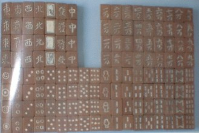

第２次大戦で敗戦した直後、日本人は食べるにも事欠く状態。とてもじゃないが、遊びどころではない。しかし人間というものは、遊ばないことには生きてゆけない。そこで物資不足のおりでも、いろいろな遊び道具が製造された。その中に、木製の麻雀牌がある。
この木製麻雀牌では、なんと云っても巣鴨プリズン牌が有名。下記は麻雀博物館所蔵の牌である（麻雀大図録より）。
巣鴨プリズンとは、戦勝国によってＡ級戦犯、Ｂ級戦犯と分類された官僚・軍人が収容されていた巣鴨刑務所のこと。その刑務所の中に、営繕や木工作業を行う木工班というのがあった。
木工班のメンバーは戦犯以外の収容者。その木工班で、Ａ級やＢ級の収容者のため製造された木製の麻雀牌が巣鴨プリズン牌である。
うまくできているといっても、作ったのはあくまでシロウト。一般への販売目的ではないし手作りなので、製造数は非常に少ない。σ(-_-)がこれまで現物を目にしたのも、２セットしかない。
１セットは上にupした麻雀博物館所蔵牌。もう１セットは大阪商業大学のアミューズメント研究所が所蔵している。同じ所で作られたモノであるから、両方とも發や東、万子の書体、あるいは数牌のデザインはほぼ同じ。よくある８索の上下間違いまで同じだ。(^-^；
しかし１索のデザインや索子の着色などに相違も見られる。そこで彫りや着色など、各パートに複数の人間が携わっていたことが分かる。
材質は彫刻しやすい朴の木なので大変軽い。適度に重くて大振りの練り牌を扱いなれた現代人が使うと、なにか頼りない感じがするだろう。
下記はその箱。箱に書かれているApproved Marjhong Setとは、製造許可済みの麻雀セットという意味。それにしても、マージャンの英語表記が
Marjhong とは、実にユニーク。
こっちはその裏面。墨書されている４Ａとは、４号棟Ａ班の意味。
このプリズン牌は、歴史的な意味でも貴重であるが、昭和20年代の物資不足のおり、手作りされた木製牌はプリズン牌だけではない。たとえば麻雀博物館には、当時の手作り牌がまだ数種、所蔵されている。下記は、昭和22年頃、東大生が麻雀をしたい一心で作ったという木製牌（麻雀博物館大図録より）。

＃う〜ん、どっちの画像もイマイチだな....(^-^；
こっち↓は、由来不明ながら、同じく当時作られたモノ（麻雀博物館大図録より）。
とまあ、戦後は木製牌がいろいろ制作されたが、いずれも愛雀家による手作り。そこで紹介するのが商品としてある程度の量が計画的に製造された木製牌。
やはり昭和20年代に製造された牌であるが、時期的にはプリズン牌より数年あとに製造されたと思われる（プリズン牌は昭和21〜22年前後製造)。商品として計画的に製造されたものであるから、それなりの職人が携わっている。
箱は、牌を重ねないで全体に並べて収納するように、平たい木の箱となっている。伴箱としての意味は大きいが、箱自体の骨董的な価値は、箱の形どうよう薄い。(^-^；
そこで同じ手作りといってもプリズン牌に比べてしっかりしている。材質はプリズン牌と同じ朴の木であるが、そのために用意しただけあって、木がしっかりしている。またちゃんと竹の裏打ちまでしてある。
彫刻、彩色も本格的である。ただ朴の木だけでは軽いので、重さを出すために牌身に鉛玉が埋め込まれている。
いかにも日本人専用に作られた牌だと感心するのが、最初から花牌が全然無いこと。そして点棒まで作られていること。連隊旗は竹を平たく薄く削って作られている。百点棒、千点棒は竹を爪楊枝の親分みたいに細く削ってある。百点棒、千点棒は色で区別する。ちゃんと木製のサイコロまで用意されている。

前述したように、愛雀家による手作り牌は、多く確認されている。しかし商売用にも製造された歴史があったとは、おどろきの新事実。その意味で、この木製牌は資料的に非常に貴重である。
実はこの牌、オークションで購入した。写真を見たとき、（おお、木製牌か。プリズン牌じゃないけど珍しいな）と思った。しかし紹介された写真では、牌が２枚裏伏せになっていた。おまけに箱には、牌が２枚ほど入るほどの余地がある。
そのうえ出品者が、「私は麻雀を知りませんが、牌が２枚不足しているかもしれません」というコメントがあった。
牌が１枚でも不足していると、資料としての価値はともかく、骨董品としての価値は激減する。よく見ると７索と北が３枚しか見あたらない。枚数は136枚あるから、裏伏せ牌が７索と北なら問題ない。
しかし２枚がわざわざ裏向けにしてあるのか、出品者が麻雀を知らないため、たまたま裏向けになっていることを気にしないで写真を撮っただけなのか分からない。
（どうしたものか）と思ったが、仮りに枚数不足で骨董的価値は低くなっても資料的価値はある。また１索が竹の子デザインなのも面白い。
それに「裏伏せ牌が何牌か分からない」なんて云うと、誰かに「お前は、裏すら、読めないのか！」と云われるような気がした。(^-^； そこで落札した。送られてきた箱をあけてみたら、裏伏せ牌はちゃんと７索と北であった。(^-^)V
※牌２枚の空間は、白牌（はくハイ＝予備牌）が入っていたと思われる。
|